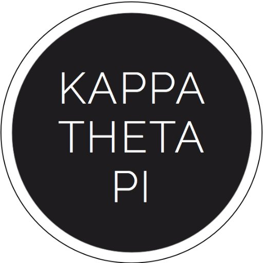
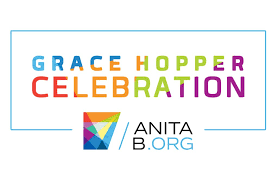

I am an undergraduate student at the University of Maryland working towards a bachelors degree in Comptuer Science and a minor in Technology Entrepreneurship. Please see my experiecnes below!
- American Express Internship American Express
- United Data Technologies Internship UDT
- FIRE Research FIRE
- Peer Mentor CMNS Peer Mentors
- Kappa Theata Pi KTP 
- Grace Hopper Celebration Scholarship Recipient 2019 GHC 

As a development intern at American Express, I was given the opportunity to design and develop a self-service user interface, which allowed employees to share third party data more easily. This interface provided a more efficient and safer way to pass customer data from one team to another. Throughout my internship I learned and utilized JavaScript, HTML, CSS, and React. This internship spanned from June 2018 through August 2018.

United Data Technologies is a technology solutions company, providing solutions in areas such as cloud, data center management, Cyber security, and more. As a professional services intern at UDT I was given the opportunity to assist with setting up and enforcing multi-factor authentication. I also was able to shadow members of the cloud and enterprise delivery services, sit in on customer meetings, and participate in their yearly cloud team conference. I worked at UDT from June 2019 through August 2019.
FIRE is the First-Year Innovation and Research Experience at the University of Maryland. My research focused on incorporating new technologies into museums, in order to improve customer experience. My goal was to see how bluetooth beacons could be integrated into The Phillips Collection Modern Art Museum in Washington, DC. Throughout my research I utilized JavaScript, C, Andriod Studio, and Gimbal Bluetooth Beacons.
I am a peer mentor within the College of Computer, Math, and Natural Sciences. As a peer mentor I act as a Teaching Assistant for an Introduction to University Studies course. I assist students with 4-year plans and operate as a front desk student worker. I am also a CMNS student recruitment ambassador. As an ambassador I inform prospective students about studying CS at UMD and assist with student panels.
I am a brother of Kappa Theta Pi, a professional co-ed technology fraternity. The goal of the fraternity is to create bonds between students who share a common love for technology, as well as allow students to grow technically and professionally. I have held a leadership position through KTP as pledge class president of the Gamma class. My roles as president include coordinating pledge class study hours, ensuring all members of my pledge class are abiding by all rules, and coordinating all new member activities.
I am so grateful to have had the opportunity to attend the Grace Hopper Celebration 2019! The Grace Hopper Celebration is one of the world's largest confrences for Women in technology. It was so inspiring to be surrounded by over 25,000 amazingly talented women, who are changing the face of technology everyday! From being mentored by software engineers and having meaningful conversations with recruiters to finding lifelong friendships, GHC exceded my expectations!